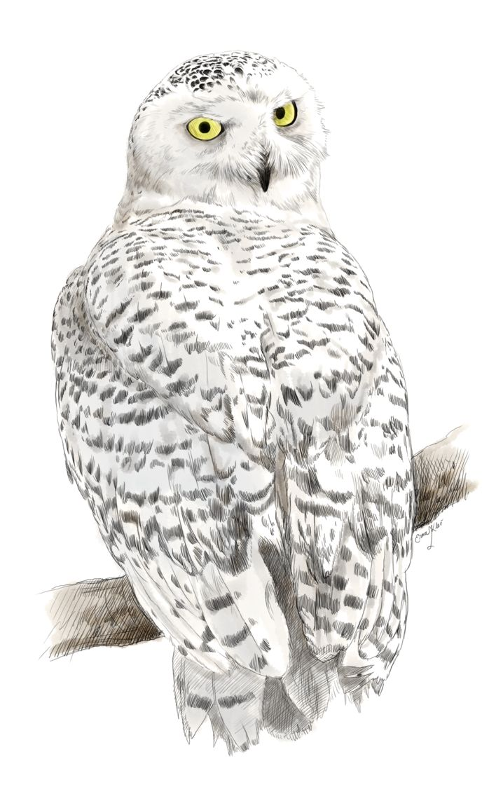

Snowy Owl's spread across the nation

A snowy owl sits in a tundra-like environment, one they are often drawn to. (Photo: Gary Bendig/Unsplash)
Snowy owls are well known for their iconic look and even their cameo in Harry Potter. But what do scientists actually know about these mysterious birds? They mostly stay in the Arctic Circle, hunting animals on the tundra. They typically stay far in the north, with only a special handful popping up in the United States--sending birders flocking to get a look. But that has started to change in recent years.
Snowy owls made their way all around the region in the autumn. They came down from the north and even into southern states. They were found on the beaches of North Carolina and even Florida. People joked that they were attracted to the sandy beaches for their resemblance to the tundra.
This is considered a phenonomen that is once in a lifetime. Scientists speculate it is likely due to the boom in population of lemmings. When snowy owls have an abundance of food, they grow strong and fat enough to fly further down south. This "irruption" is the largest ecologists have seen in 40 to 50 years.
The greatest irruption in the past few years begain in 2014. After that, it can be observed that the United States became much more vistied by Snowy Owls.
Below you can view visualizations of reported sightings of Snowy Owls in different time frames. The months are indicated to give an idea of the movement over time. The visualization offers longitudal and latitudal information, along with indication of warmer months represented by red.
Snowy Owl
Bubo Scandiacus
"The regal Snowy Owl is one of the few birds that can get even non-birders to come out for a look. This largest (by weight) North American owl shows up irregularly in winter to hunt in windswept fields or dunes, a pale shape with catlike yellow eyes. They spend summers far north of the Arctic Circle hunting lemmings, ptarmigan, and other prey in 24-hour daylight.-" All About Birds, Cornell Lab of Ornithology
The migration of snowy owls is along the southern border of Canda. Such irruptions of snowy owls in areas outside of southern Canada are usually seen in only a few northern states on the East or West Coast.
The data shows that after the initial erruption between 2013 and 2014, the population density of snowy owls in the US is significantly larger.

Photo by Jakob Puff on Unsplash
Below you can view the data table that was used to make the visualizations above. All of the data was collected through a collective citizen science effort, with the data managed by the Cornell Lab of Ornithology. The following dataset was granted by the Cornell Lab of Ornithology. Visit ebird.org to see more data and submit your own observations. The data in this article relies on the citizens who reported their sightings, and the integrity of their recordings.
| COMMON NAME | OBSERVATION COUNT | STATE | LATITUDE | LONGITUDE | OBSERVATION DATE |
|---|---|---|---|---|---|
| COMMON NAME | OBSERVATION COUNT | STATE | LATITUDE | LONGITUDE | OBSERVATION DATE |